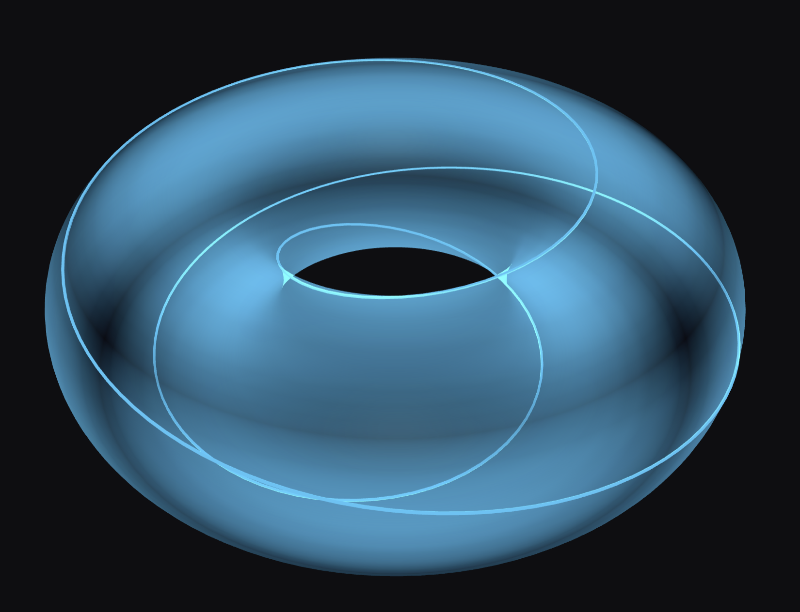

Forma is an open exploration of whether matter, and what we call "forces" might all arise from light and geometry.

Physics spent centuries breaking the world down into smaller and smaller pieces. At a certain point, the pieces stopped being little balls and started becoming waves. Forma extends that idea to its logical conclusion.
In this picture there is only energy (light) and geometry (the domain light moves in).
Mass emerges when light is confined to a closed surface. This is the first-order effect. Enclose that mass in a second closed surface, and you get charge, the second-order.Einstein showed that gravity is not a force but rather the shape of spacetime. He hoped to show that electromagnetism works in a similar way but he never fully succeeded. Forma picks up that thread and shows how it can be done.
Matter as light on geometry. Charge as winding. Mass as confined frequency. In plain language, from the question what if? to a concrete framework.
Start here →Two layers. GRID is the lattice substrate that yields Maxwell and Einstein from six axioms. MaSt is the architecture of compact dimensions where particles live as standing waves.
See the architecture →What falls out of the geometry: percent-level mass predictions, three lepton generations, Z²·α nuclear scaling, a plausible dark-matter ratio, and an emergent neutron nobody put in by hand.
See headline results →Forma is a work in progress, not a finished theory. Several of its results are remarkably clean; others are tentative, and a few are openly unresolved. The whole thing is conducted in the open: every numerical result in the repository is produced by a script that can be inspected and re-run. If you have the background to look carefully, we’d welcome the second pair of eyes.